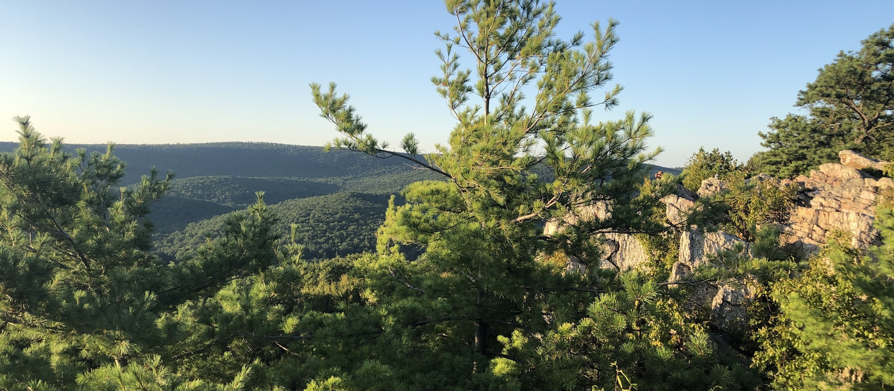

Backpacking Michaux
BACKGROUND
The Michaux (mih-SHOW) State Forest is an 85,000 acre state-managed forest covering the majority of South Mountain in Pennsylvania. The Michaux is culturally, historically, and geographically important to the region. There are many remnants of the iron and logging industries, including preserved iron furnaces, most visibly at Caledonia and Pine Grove Furnace state parks. The Michaux is home to Penn State Mont Alto Campus, one of the finest and oldest forestry schools in the country. As with all the Pennsylvania state forests, the Michaux is a "working forest". It is actively logged, mined, and otherwise used for environmental resources. It offers critical public-use outdoors opportunities to the mid-atlantic region.
South Mountain is the (poorly named) northern terminus range of the Blue Ridge Mountains. The Blue Ridge is a 600 mile mountain chain which includes the Smoky and Shenandoah ranges. South Mountain stretches from Dillsburg, PA south to the Potomac River near Harpers Ferry. The Blue Ridge is the eastern portion of the Appalachians and is separated from the rest of the Appalachians by a wide valley, known in general as the Great Appalachian Valley. The Blue Ridge is distinct from the rest of the Appalachians in both topology and culture.
The goal of this website is to archive my personal knowledge of backpacking in the Michaux. The Michaux offers some of the best backpacking in Pennsylvania. The forest has a dense trail network, excellent map availability, and open camping regulations (please read Section 21.117 of the State Forest Rules). There are many excellent already established campsites that should be used if possible. The Appalachian Trail runs 36 miles through the forest and provides an excellent central route north-south. The halfway point of the entire trail (1100 miles from both Springer Mtn., Georgia and Mt. Katahdin, Maine) is contained in the forest near Pine Grove Furnace.
LINKS
- Michaux DCNR Homepage
- PA State Forest Rules and Regulations
- Public Use Map (download)
- MidAtlanticHikes - a great resource for hikes across the mid-atlantic
- Leave No Trace principles
- Purple Lizard Map - The best map of the area ($17 but worth it)
- PATC Cabin Rentals
- PA Tree Identification
TERMINOLOGY & ABBREVIATIONS
- Hollow: A small valley, with a stream flowing through the base, separating two mountains or ridges. Generally hollows start wide and low and narrow as they gain elevation into the surrounding upland.
- Pass: a sharp V-shaped cutout in a ridge generally where water flows out.
- Blaze: The colored markings, spray painted on trees, to denote the route of a trail.
- Haul Road: Another name for a logging road. Many in the Michaux grown over and are simply grass paths through the trees, though some still have gravel/chipped shale surfaces.
- AT: Appalachian Trail. 2200 mile extremely famous long trail, 36 miles of which (including the halfway point in Pine Grove Furnace SP) are contained within the Michaux. The AT is the only trail blazed in white.
- PATC: Patomac Appalachian Trail Club. Rents out cabins in the Michaux and handles maintence and care of the trail in Northern VA, WV, MD, and Southern PA.
- DCNR: Pennsylvania Department of Conservation of Natural Resources. Managing body of the PA State Forest system.
DAY HIKES
CalTopo MapThe map linked above contains routes for the day hikes listed in this section. The routes are made up of several subsections, generally split where trails start and end. The colors of the headings for each trail match the associated trail in CalTopo but do NOT match the blazed colors in the forest. The Public Use Map is pretty good, but doesn't list all trails described here. The Purple Lizard map is far more detailed, durable, and contains many trails not marked on the DCNR map.
ROCKY KNOB TRAIL | 4 mi
Parking: Either on Birch Run road at the northern tip of Long Pine Run Reservoir or on Ridge Road. I suggest birch run, though that lot is generally more crowded, the south connector trail is more interesting.
Route: Starting from the south connector trailhead, you begin at the confluence of Birch Run (heading north east) and Knob Run (heading northwest), immediately before their outlet into Long Pine Run Reservoir. The South connector trail follows Knob Run up the valley between Rocky Knob to the right and Mitten and Wolf hill to the left. As you climb, Rocky Knob's Steep southwestern face exhibits a large glaciated boulder field. It is possible to summit rocky knob easily, however any trails there have been closed due to an abundance of rattlesnakes. The summit is small and, well, rocky. The south connector meets the Rocky Knob Loop, the main section of the hike. This loop (going counter clockwise from 6-o'clock) traverses over Sier Hill, the second higest peak in Adams County, and exhibits a few distinct vistas, most interestingly looking back over rocky knob and the reservoir nearly 700' below. The north connector is a bit shorter, and fairly boring, though it crosses the Appalachian trail and is a good connection for longer hikes. The trail is covered mostly with hardwood forests, though the beginning of the south connector is heavily coniferous, there are dense rhododendron tunnels throughout.

ASTRO-CANADA | 8.5 mi
Parking: There are two places to park, both on Ridge Road. I suggest parking at the parking area #2 on the associated map, it is a large multi-way intersection that has plenty of room to park. The Fegley road intersection is a better way to do the hike but there is occasional logging I've seen in the area and only room to pull off for one car.
Route: Starting from the Fegley Road intersection: the route begins on Fegley Road, a haul road that is mostly just a grass path. The road meets a 4-way intersection with one of the corners cut and a bit of clearing that can be confusing. The beginning of Astronomy Trail is marked with a post and the trail is blazed in red. The first turn can be hidden, so if you stop seeing red blazes or continue on a road instead of trail, turn back and make sure you're going the right way. Astronomy trail traverses a narrow two mile ridge that extends northwest pointing toward Cumberland Valley, with Reservoir Hollow to the left and Thompson Hollow to the right. The views from Astronomy ridge are pretty good, no wide open vistas, but Midnight Ridge is sharp and craggy to the right and Cumberland Valley begins to open up in front. The trail concludes with a short but steep descent of about 400' vertical. Make a left turn and walk gradually uphill on the gravel Milesburn Road for about 3/4 of a mile. Canada Hollow road and trail connect to the right at a small bridge over a creek. Either the road or the trail will bring you to where you need to go but the trail is much more exciting. The climb up Canada hollow is fairly arduous. The steepest part of the trail is on a fairly wide logging road, as you leave Canada Hollow you emerge into an open, recently logged section that provides great views across Cumberland Valley to Blue Mountain in the west and the surrounding Hollows. The trail can be ambiguous with several forks that are unmarked. I suggest using a phone app (Hiking Project) with GPS to guess at which forks to take and just try to shoot for the many-way intersection of Milesburn and Ridge roads with the AT. Luckily, because you are directly above a populated area, cell service is excellent. Once you reach the intersection, you take the AT north, down a sharp descent, and past Milesburn Cabin (there is a potable spring marked in blue near the cabin). The AT continues up the northern face of Big Flat Ridge through dense pine plantations. One interesting site is an amazing AT campsite in the pines. It is an excellent spot to spend a night. Eventually, you meet Fegley road again at a powerline cut through. Take a left and meet back up with the car.


VISTA-CANYON-BUCK RIDGE | 9-9.4 mi
Parking: Either park near Fuller Lake or Laurel Lake in Pine Grove Furnace State Park. There is plenty of parking at both. Near Fuller lake is the Pine Grove General Store (I believe cash only). The general store hosts the "Half Gallon Challenge", because the state park represents the halfway point of the Appalachian trail, hikers are challenged to eat a half gallon of ice cream. They have food, it's okay for a general store in the middle of nowhere.
Route: Beginning at the Laurel Lake parking lot: cross PA233/Pine Grove Road to Cold Springs Road, then turn right on Moutain Creek road. follow mountain creek road for about 3/4 of a mile. It will make a large C-shaped bend, at the top of the "C" an unmarked trail ascends along a rocky ridge. This trail has several forks that are not marked, again using Hiking Project or the Purple Lizard Map will help. If you start descending, you are probably going the wrong direction. After less than a mile the trail flattens out a bit but is still generally uphill. The first unnamed vista (simply reffered to as Vista), is about 3/4 of a mile from leaving Mountain Creek road in a copse of pitch pine (the pine trees which grow twisty and flattened). This vista looks south west over Mountain Creek Valley. Little Rocky Ridge is the smaller ridge visible in the distance in front of Big Hill which is cut on the northern end by a sharp pass. Along the trail, note the almond shaped, 20' long sections where the trail splits in two and rejoins itself. These are for mountain bikers who need to get off the trail to patch tires, pass each other, etc. These are trails made by mountain bikers, so respect them if you see them. After the first vista, you will pass two right hand turns/forks. A trail forms a loop between the two and provides another vista known as Canyon. It looks north up Mountain Creek valley and is less impressive. Eventually the trail hits a grass road, turn left here and hit a gravel road - Cold Spring road. It is a pretty good road walk down past some beautiful cabins if you want to call it early (the road is about a 2 mile walk back to Laurel Lake). Directly across Cold Spring is access to Buck Ridge Trail. This heads south west along the base of Buck Ridge toward Little Rocky Ridge. After about 3.4 miles, the trail hits PA233/Centerville Road. Here you must carefully cross that and Pine Grove Road again. The Fuller Lake/PGF General store area is at this intersection. To get back to Laurel Lake, there are a few options including the gravel/paved (and difficult to say) Old Railroad Bed Road, or Mountain Creek Trail. Pick up a map of PGFSP as a souvenir and a guide to get back to the car, about 3 miles away.


ABIGAIL - WILDCAT - ANT HILL | 9-12.2 mi
Parking: Park at the Birch Run site mentioned in the Rocky Knob description
Route: This is a "Lollipop Loop", meaning the you complete the beginning section, make a loop, and hike the beginning in reverse. Luckily Dam Breast Access and Abigail trails which make up the "stick" of the lollipop are beautiful enough to be worth hiking twice. Starting at the Birch run lot, you can hike the dam breast access trail, which is not really marked, but pretty easy to follow. It parallels a road by the same name and follows the shore of Long Pine Run reservoir. At the end of this trail, you find yourself at the dam breast, which is interesting to hike out onto and see the man-made waterfall at the outlet of the reservoir. Abigail Trail is marked with a post and well mainted and blazed. It traverses northward up the lower extent of East Big Flat Ridge, looking back you get views of the reservoir as you climb away. After 2.2 miles, take a right at the intersection with EUB Camp Trail, which descends fairly quickly off the ridge and varies from trail to a haul road. After about a mile, Abigail trail rejoins to the left, which can be taken to cut the hike down to less than 9 miles. A half mile later, Wildcat trail extends to the left. Wildcat climbs across and up the ridge meeting a powerline cut-through. Turn left and follow a small trail along the cut for several hundred feet. Ant Hill Trail breaks off to the left and runs south to the summit of the ridge - Strasbaugh Hill. Eventually, Ant Hill rejoins Abigail trail. Turn right and follow a new portion of Abigail back to the EUB/Abigail intersection, where you complete the Lollipop loop. The route back to the car is significantly easier as you descend the ridge back down to the dam.
BACKPACKING
Due to the high density trail network and open primitive camping regulations, the Michaux is an execellent host to backpackers. It's possible to create longer loops that cover great stretches of the forest using many trails. While you are often required to compromise with short road walks or double-traversing a section, it's still possible to execute highly immersive trips with few breaks in scenery. Most importantly for backpackers: get a Purple Lizard map. They are your best bet.
Campsites
This is an evolving map of campsites I personally know to exist in the forest. I have only started logging these over the past few trips so this set should grow. These are logged by taking a photo, which automatically tags the location.
OTHER COOL STUFF
FOOD
One of my favorite places to eat near the Michaux is Twirly Top, at the northern tip of the Michaux along PA34/Carlisle Road. A vintage ice cream joint with sandwiches, etc. They have incredible mozz sticks. Pine Grove Furnace General Store is probably the only place to eat within the actual confines of the forest. At the southern tip, along PA route 16 in Waynesboro is Red Run Grill, a one-off fast food restaurant specializing in roast beef sandwhiches. Hollabaughs Orchard Market is in Biglerville, about 10 minutes outside the forest. Adams County has some of the best apples in the world. Gettysburg, Carlisle, and Chambersburg of course have many more options.
CABINS
As linked above, the PATC rents cabins. Not all are available to non-members but all of the ones in the Michaux are. They are incredibly cheap ($35-50/night), can sleep 8-10 people, and are very fun. The cabins are extremely rustic. You have to cook over a wood fire, use an outhouse, etc. Milesburn is the best cabin in the forest (the new cooking stove is incredible once mastered), though Hermitage is good as well. I would suggest putting together a fairly large group as there is a lot of work to do to if you want the real experience (read: chopping wood, retrieving and filtering water, cleaning dishes with cold water, etc).
CAMP MICHAUX
A World War 2 POW camp, which is now in ruins. If you're into history, it is pretty interesting. here is a lot more information than I could ever write about it.